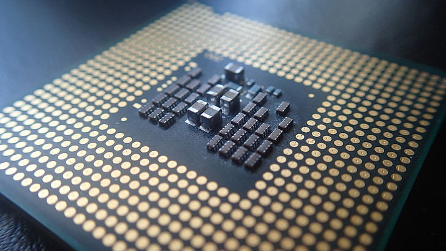

The Central Processing Unit (CPU) is one of the most important components of a computer. It is often referred to as the “brain” of the computer because it is responsible for executing instructions, performing calculations, and controlling how all other components function. Without the CPU, a computer would not be able to run programs or process data.

Figure: Central Processing Unit (CPU)
The CPU is a hardware component located on the computer’s motherboard. It processes instructions from programs and performs operations such as arithmetic calculations and logical decisions.
The CPU works with other components, including memory and storage, to carry out tasks efficiently. It receives input, processes it, and produces output.
The CPU operates using a process called the fetch-decode-execute cycle. This cycle allows the CPU to process instructions step by step.
This cycle happens extremely quickly, often billions of times per second, allowing computers to perform complex tasks in a very short amount of time.
The CPU is made up of several key parts that work together:
Each of these components plays a role in ensuring the CPU can process instructions efficiently.
The performance of a CPU is measured in gigahertz (GHz), which indicates how many cycles it can perform per second. A higher GHz value means the CPU can process more instructions in less time.
| CPU Speed | Meaning |
|---|---|
| 1 GHz | 1 billion cycles per second |
| 2 GHz | 2 billion cycles per second |
| 3+ GHz | Faster processing and better performance |
Faster CPUs improve performance, especially when running multiple programs or complex applications.
The CPU works closely with memory to perform tasks. Memory stores the data and instructions that the CPU needs. When a program runs, the CPU retrieves instructions from memory and processes them.
This interaction allows computers to run software smoothly and efficiently.
Every device that performs computing tasks has a CPU. Examples include:
Even though CPUs vary in size and power, they all perform the same basic function: processing instructions.
The CPU is essential because it controls all operations in a computer. It ensures that instructions are carried out correctly and that programs run smoothly.
Without the CPU, a computer would not be able to perform any tasks, making it one of the most critical components of any computing system.
This page contains important information that will help you answer quiz questions. You should remember the following key ideas:
Understanding these concepts will help you correctly answer quiz questions related to the CPU.
The CPU is the central component that processes instructions and controls computer operations. It works together with memory and other hardware to perform tasks efficiently. By understanding how the CPU works, you gain insight into how computers function as a whole.